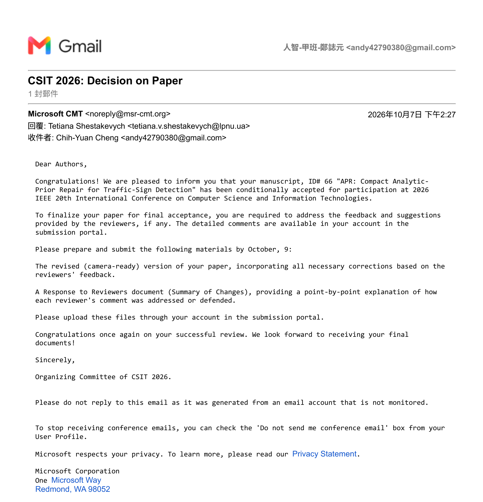

IEEE CSIT 2026 論文狀態
已接收
最後更新：（上次更新：｜審查中）
論文資訊
論文題目
APR: Compact Analytic-Prior Repair for Traffic-Sign Detection
作者
Chih-Yuan Cheng、Bor-Jiunn Hwang
本人角色
第一作者
投稿會議
2026 IEEE 20th International Conference on Computer Science and Information Technologies (CSIT)
目前狀態
已收到 CSIT 論文決定通知
狀態佐證
Gmail／Microsoft CMT 接收通知
